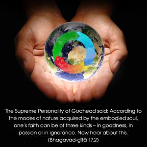
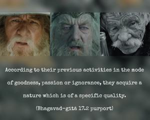
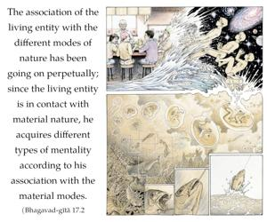

The Supreme Personality of Godhead said: According to the modes of nature acquired by the embodied soul, one’s faith can be of three kinds – in goodness, in passion or in ignorance. Now hear about this.



Those who know the rules and regulations of the scriptures but out of laziness or indolence give up following these rules and regulations are governed by the modes of material nature. According to their previous activities in the mode of goodness, passion or ignorance, they acquire a nature which is of a specific quality. The association of the living entity with the different modes of nature has been going on perpetually; since the living entity is in contact with material nature, he acquires different types of mentality according to his association with the material modes. But this nature can be changed if one associates with a bona fide spiritual master and abides by his rules and the scriptures. Gradually, one can change his position from ignorance to goodness, or from passion to goodness. The conclusion is that blind faith in a particular mode of nature cannot help a person become elevated to the perfectional stage. One has to consider things carefully, with intelligence, in the association of a bona fide spiritual master. Thus one can change his position to a higher mode of nature.